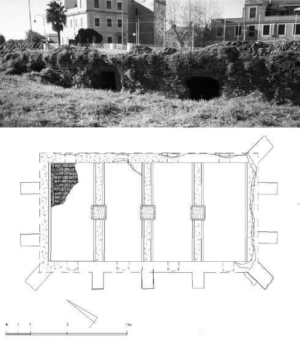
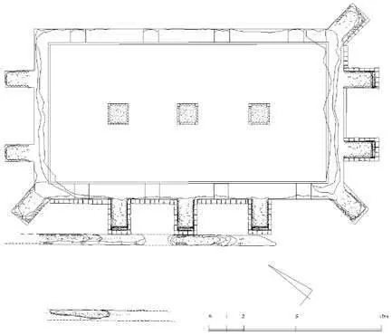
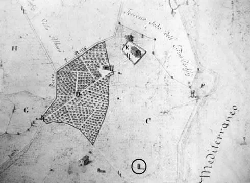
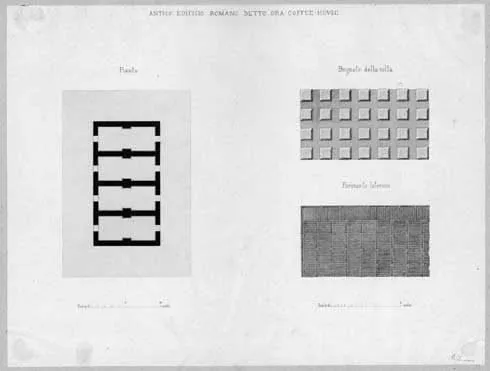
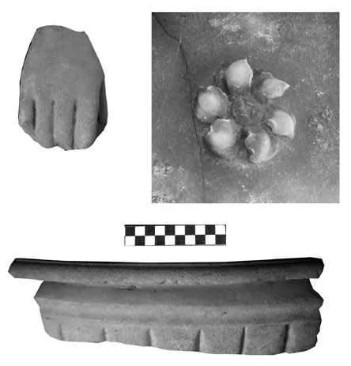

Una cisterna, un salotto e un bersaglio: le tre vite del Cisternone
Una cisterna romana del II secolo d.C. Nel 1743 Galilei e Michetti la trasformarono in un padiglione per gli svaghi di un cardinale, e nel 1813 la distrussero gli inglesi. Un solo edificio, tre vite diverse.
L'edificio che Lugli non vide
Tutti la chiamano «Cisternone», e la trovi all'incrocio tra via Ardeatina e via Tripoli. Sta sulla dorsale del pianoro di Santa Teresa, dentro il perimetro dell'antico vallo, vicino alla Porta Aurea. Quando Giuseppe Lugli studiò Antium, nel 1940, la saltò. Perché? Probabilmente allora era nascosta dentro una costruzione moderna.
La prima a leggerla come reperto fu Pino Chiarucci, nel 1989. La prese per una cisterna di età repubblicana, al servizio della cosiddetta «villa del Semaforo». Poi, nel 2009, la Soprintendenza la scavò e la restaurò per aprirla al pubblico, sotto la guida di Francesco Di Mario. E lo scavo cambiò parecchie cose, come hanno raccontato Silvia Aglietti e Angela Patrizia Arena.

Com'era fatta la cisterna
In origine era un edificio rettangolare di circa 10 × 18 metri. Tutto in mattoni, su due piani. Il piano di sotto aveva quattro aperture su ciascuno dei lati lunghi e serviva solo a reggere il resto: acqua non ne conteneva. Il serbatoio vero stava al piano di sopra, e ne resta il pavimento in cocciopesto, un impasto impermeabile fatto con cotto macinato. Tre grandi pilastri di mattoni dividevano l'interno per il lungo in due navate.
Su tre lati lo scavo ha trovato dieci contrafforti rettangolari, disposti a raggiera. Quelli d'angolo sono più grandi, lunghi 2,25 metri e spessi 1,20; quelli dei lati misurano circa 1,65 per 0,90. Dove il muro si allarga alla base corrono due file affiancate di mattoni bipedali, cioè lunghi due piedi romani. E sul lato nord-est? Lì i contrafforti non ci sono, perché il terreno scende da solo.
I bolli laterizi, i marchi di fabbrica stampati sui mattoni, confermano che la cisterna è di età imperiale. Un bollo rotondo nomina i consoli Petino e Aproniano, e quindi porta al 123 d.C.: veniva dalle fornaci Liciniane della famiglia Domizia. Un altro, senza scritta, con un tridente, è databile fra il 196 e il 222 d.C. Su alcune tegole c'è poi un bollo su una riga sola: TIHE.

I confronti più vicini sono le cisterne fuori terra della campagna intorno a Roma. Casale Bianco a Settecamini è del I secolo a.C.; Castel di Guido e Tor Carbone sono del I secolo d.C. La più simile è la cisterna P della Villa dei Quintili sull'Appia, del II secolo d.C. In città, il parallelo monumentale è la cisterna delle Sette Sale. La data, quindi: II secolo d.C., età imperiale, non repubblicana.
A chi serviva tutta quell'acqua
La cisterna serviva la «villa del Semaforo», una residenza sulla costa con le sue terme, subito a nord della villa imperiale di Nerone. Non dava acqua alla villa dell'imperatore, quindi, ma a una villa privata accanto. Stava sulla dorsale, più in alto delle terme: l'acqua ci arrivava da sola, per caduta.
Fuori dal lato sud-ovest lo scavo ha trovato anche due strutture più antiche, della tarda Repubblica: un muro in opera reticolata di tufo e una fondazione in opera cementizia. Un frammento di anfora Dressel 2-4, un tipo prodotto dal 70 a.C., e un coccio di ceramica a vernice nera dicono la stessa cosa. Prima della cisterna, qui c'era già qualcuno.
La seconda vita: il Caffeaus del cardinale (1743)
Nel 1743 l'area entrò nella tenuta del cardinale Neri Maria Corsini (Firenze, 1685 – Roma, 1770), nipote di papa Clemente XII. Sopra i ruderi romani il cardinale fece costruire un Caffeaus «a guisa di Torretta», vicino al cancello della proprietà, alla Porta Aurea.
Che cos'era un caffeaus? Un tipo di edificio nato in Europa intorno al 1700. Era la risposta dei nobili ai caffè pubblici dei borghesi: un padiglione privato nei giardini, con la vista, lontano dalle formalità del palazzo. In Italia i più celebri sono la Coffee House di Palazzo Colonna (1731–33), quella del Quirinale (1741–44) e la Kaffeehaus di Boboli (1774–85). Quello di Anzio, del 1743, era il terzo tra i caffeaus romani, subito dopo il Quirinale.
Il progetto di Galilei, l'esecuzione di Michetti
Il progetto era dell'architetto Alessandro Galilei (Firenze, 1691 – Roma, 1737), lo stesso della facciata di San Giovanni in Laterano. Lo legava a Neri Corsini un rapporto di protezione: era stato Corsini, nel 1719, a rendere possibile il suo rientro in Italia. Il progetto per la villa anziate è del 1731.
Galilei ad Anzio non ci venne mai, né per progettare né per costruire. Con il luogo ebbe a che fare solo attraverso disegni e lettere.
Galilei morì il 21 dicembre 1737, e il Caffeaus fu costruito sei anni dopo: un progetto postumo. Lo realizzò Nicola Michetti (Venezia, ca. 1675 – Roma, 1758), che vi portò «sostanziali modifiche». Dal 1718 al 1723 Michetti era stato architetto di corte dello zar Pietro il Grande a San Pietroburgo, e aveva lavorato a Peterhof, ai padiglioni Monplaisir, Marly ed Ermitage. Nel 1731–33 aveva costruito a Roma la Coffee House di Palazzo Colonna.
Cosa fece Michetti ai ruderi romani
Un atto del 1743 lo descrive così: «dove su la punta della cima delle mura antiche della città di Anzio verso mare vi è eretta di nuovo una fabbrica a guisa di Torretta detta Caffeaus». Per farlo, Michetti cambiò la cisterna in tre modi:
- Costruzione di volte a botte che suddivisero lo spazio in quattro ambienti.
- Posa di pavimenti in commesso laterizio al piano inferiore.
- Erezione della «Torretta» al piano superiore, il caffeaus come padiglione panoramico.
La terza vita, e la fine: gli inglesi, 1813

Nel 1819 Antonio Nibby, nel Viaggio antiquario ne' contorni di Roma, lo trova già in rovina: «Il caffeaus stesso oggi è abbandonato e in rovina: esso è fondato sopra gli antichi avanzi sul culmine del promontorio… esso fu edificato l'anno 1743 dal Card. Nereo Corsini».
Il Caffeaus fu distrutto il 5 ottobre 1813, quando una squadra di navi inglesi attaccò Porto d'Anzio e lo tenne per due giorni. Erano gli anni delle guerre napoleoniche. Prima di ripartire, gli inglesi distrussero i fortini, la Torre di Capo d'Anzio e le strutture del porto. Perché anche il Caffeaus? Forse la sua «Torretta», alta sul promontorio, fu presa per una postazione militare di segnalazione. O forse fu abbattuta apposta, come punto di osservazione.
Una ricostruzione moderna mette l'incursione nel febbraio 1813. Lombardi, che scriveva una generazione dopo raccogliendo i ricordi del posto, la racconta invece al 5 ottobre 1813, e con molti dettagli. Un vascello, una fregata, una corvetta e un brick partono da Ponza «a pigliare vendetta di un affronto», fatto l'anno prima dalla guarnigione francese a una nave inglese. Il cannoneggiamento va dalle 11 al tramonto, e la fregata ne esce «conciata a tal segno da doversi ritirare». Seguono due giorni di saccheggio.
I fortini e la Torre vengono «minati e fatti saltare in aria», le navi del porto portate via come preda. Chi ha ragione? Lombardi. Le biografie degli ufficiali inglesi che c'erano, raccolte da John Marshall nel 1824 e da William O'Byrne nel 1849, datano l'azione al 5 ottobre 1813. Marshall riporta anche la lettera ufficiale del comandante, con l'elenco delle batterie che difendevano il porto. Il capitano Henry Duncan, con la fregata Impérieuse, sorvegliava il convoglio da giorni e preparò l'attacco; il comando lo prese George Dundas, più anziano, arrivato con il vascello Edinburgh. Le navi inglesi catturarono 29 bastimenti francesi ormeggiati sotto due batterie e una torre, carichi soprattutto di legname per l'arsenale di Tolone.
La vecchia Torre di Capo d'Anzio, saltata in aria nel 1813, portava uno stemma papale «innocenziano», ritrovato in pezzi tra le macerie. Nel 1846 la batteria che aveva preso il posto della torre fu ricostruita. Fu Lombardi in persona a consigliare di «incastonare nel muro interno della medesima lo stemma Innocenziano riordinato». È uno dei primi gesti documentati, ad Anzio, di quella che oggi chiameremmo tutela della memoria.
Lo scavo ha dato una conferma. Nello strato di abbandono del Caffeaus sono venuti fuori proiettili sferici di piombo per armi ad avancarica. Sono di prima del 1823, quando furono inventati i proiettili a punta che presero il posto delle palle tonde. Quelle palle tonde, cioè, sono più vecchie del 1823: tornano con l'incursione inglese del 1813.


Sintesi delle quattro fasi
| Fase | Datazione | Descrizione |
|---|---|---|
| Tardo-repubblicana | I sec. a.C. | Muri in opera reticolata di tufo: area già edificata prima della cisterna |
| Imperiale: cisterna | II sec. d.C. | Cisterna fuori terra a 2 piani (10×18 m), 3 pilastri in laterizio, 10 contrafforti, pavimento in cocciopesto |
| Settecentesca: Caffeaus | 1743 | Michetti su progetto postumo di Galilei: volte a botte, pavimenti in commesso, «Torretta» panoramica |
| Distruzione | 5 ottobre 1813 | Incursione navale inglese: la «Torretta» abbattuta durante l'incursione |